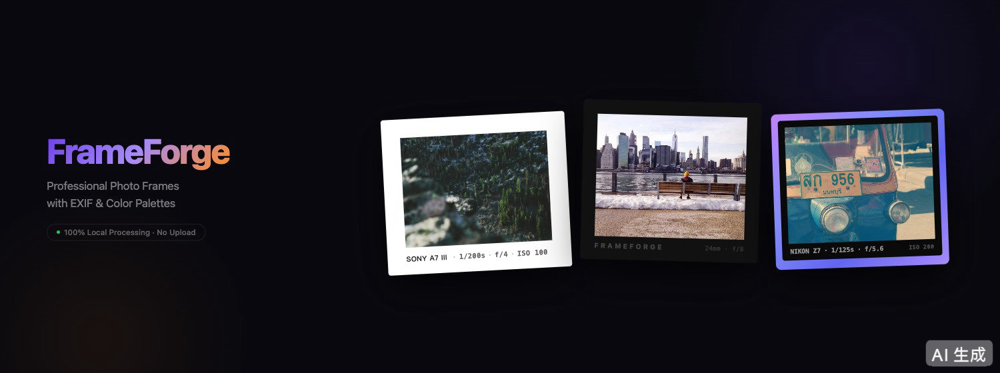
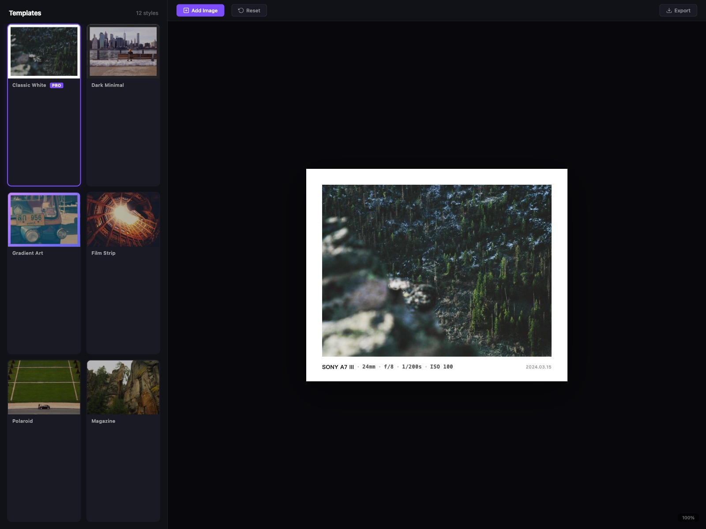
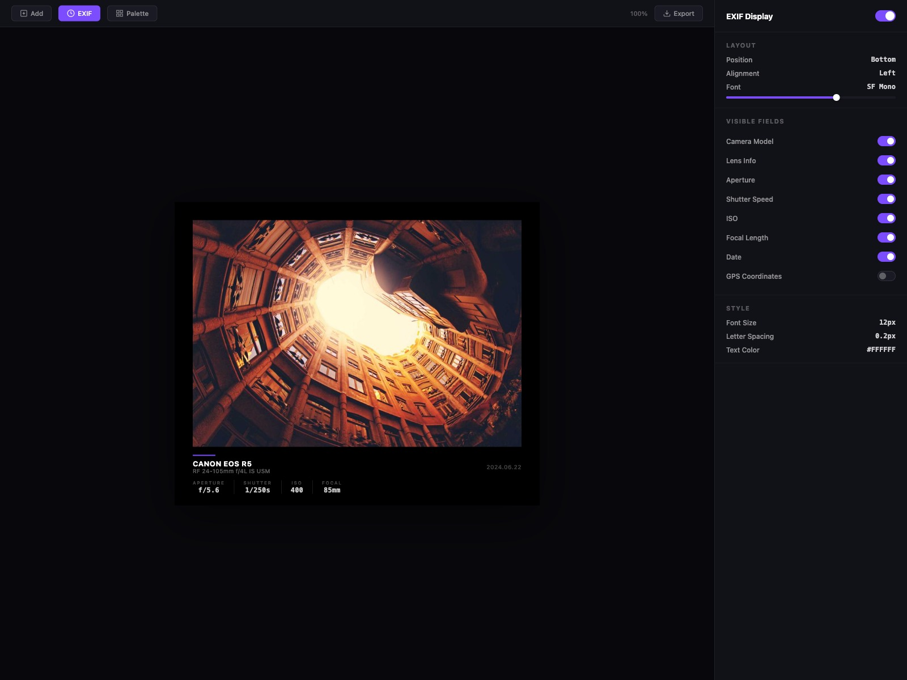
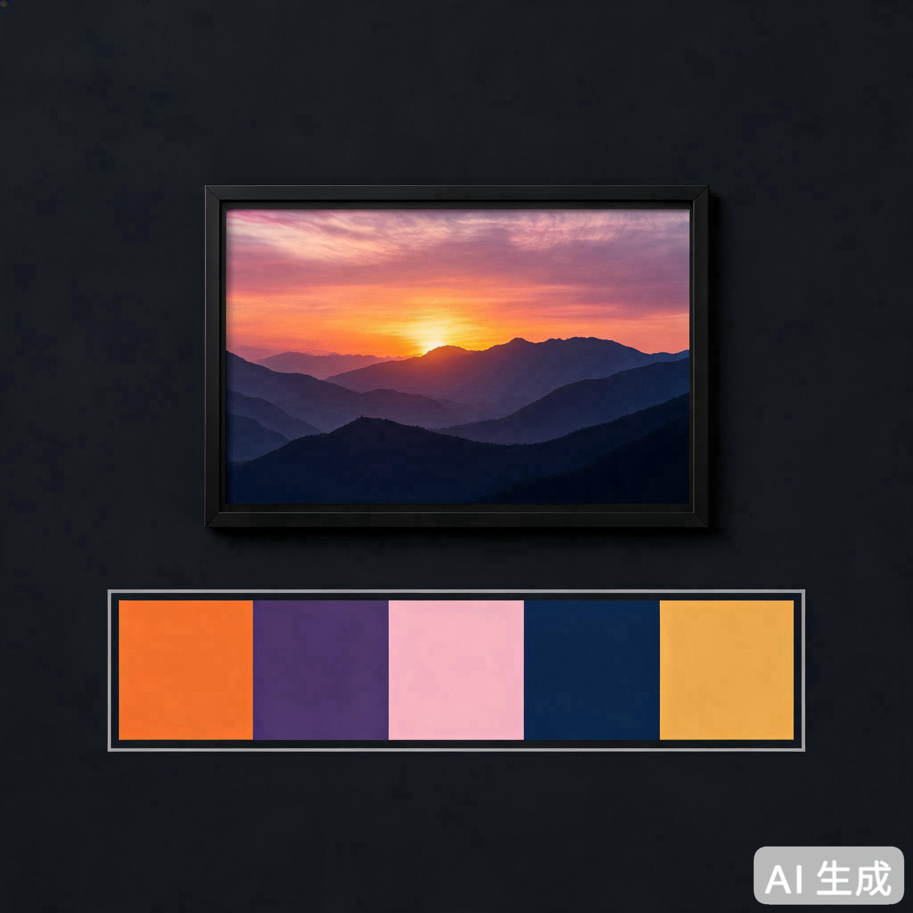
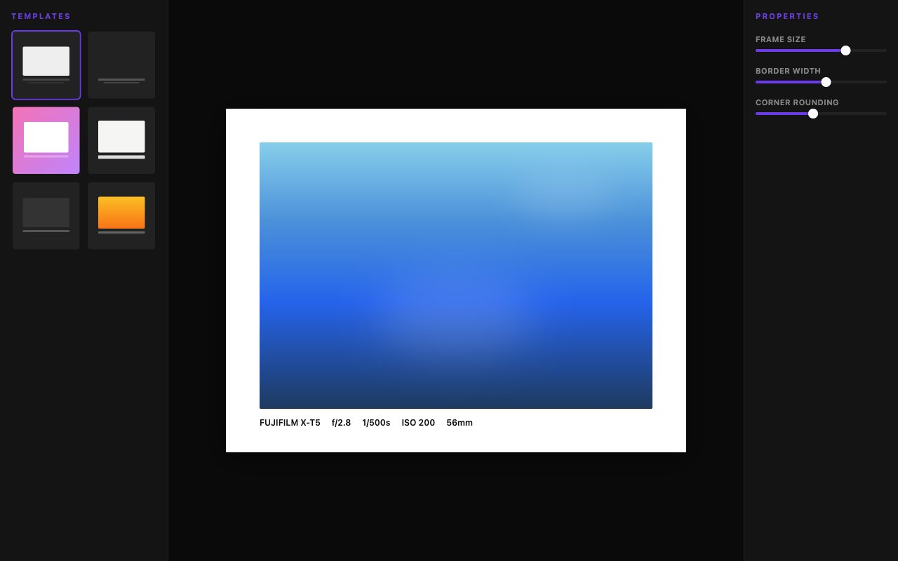
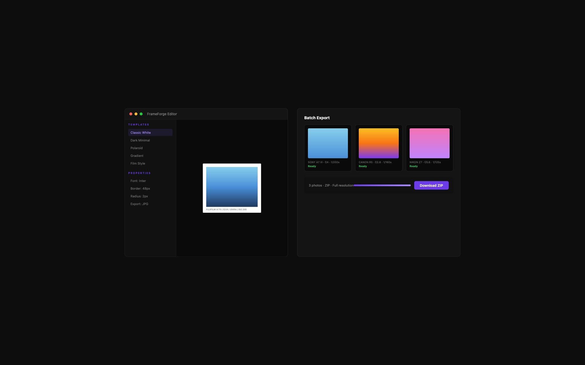

FrameForge 自动展示拍摄参数、相机品牌 Logo、主调色盘，用相机风格的精美边框让你的照片脱颖而出。所有处理在本地完成，照片从不离开你的电脑。

Canva、PS 加边框功能很基础，没有相机风格专业模板，手动排 EXIF 参数又丑又累。
很多在线工具需要上传照片到服务器处理，你的隐私和作品安全完全不受控。
每张照片都要重复调参数、加边框？FrameForge 支持批量处理，统一模板一次搞定。
从经典竖排到胶片风格，每个模板都精心设计还原真实相机排版，让你的照片自带专业范。

上传照片后自动读取全部拍摄参数，以相机风格精美展示在边框上，比任何纯 EXIF 查看器都直观。

FrameForge 自动从照片中提取主色调，以精美色卡条展示在边框底部，让你的作品更具设计感。

12+ 可调参数，从字体到边框、从背景到阴影，所有元素都可以精细控制。

一次处理多张照片，统一模板一键导出，支持 JPG/PNG、DPI 注入、全分辨率输出。

点击「安装 Chrome 扩展」，一键添加到浏览器工具栏，无需注册，无需登录。
点击工具栏图标打开编辑器，拖入或选择照片，自动读取 EXIF 参数和主色调。
挑选喜欢的模板，微调字体和配色，一键导出高清成品，支持批量处理。
不会。所有图片处理完全在你的浏览器本地完成，照片从未离开你的设备。没有上传、没有联网、没有追踪。
支持 JPG、PNG、WebP 格式的照片导入。导出时可选择 JPG 或 PNG，支持全分辨率输出和 300/600 DPI 注入。
核心功能完全免费，包括所有模板、EXIF 展示、调色盘和批量导出。没有隐藏付费，没有 VIP 限制。
支持所有主流相机的 EXIF 数据读取，包括相机型号、镜头、焦距、光圈、快门速度、ISO 等全部参数。每项参数可单独控制显示或隐藏。
可以。即使照片没有 EXIF 数据，你仍然可以使用所有模板、调色盘和自定义文本功能。EXIF 区域会自动隐藏。
不需要。FrameForge 安装后完全离线运行，不依赖任何网络服务。唯一的网络请求是首次访问时检测语言（仅判断国家代码）。
这是 FrameForge 的核心承诺，也是我们做产品的初心。
所有图片处理在本地浏览器完成，照片从未离开你的电脑。不上传、不联网、不追踪。
核心功能完全免费，无 VIP，无隐藏付费。提供纯粹、无打扰的创作体验。
无需登录或注册，Chrome 浏览器安装后立即使用，用完即走，不留痕迹。
支持全分辨率输出、DPI 注入，满足社交分享和专业印刷，保证清晰锐利。
体验这款纯粹、强大、真正尊重你隐私的照片边框 & EXIF 编辑器。